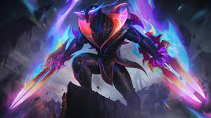
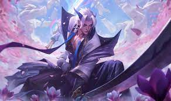
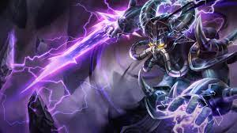
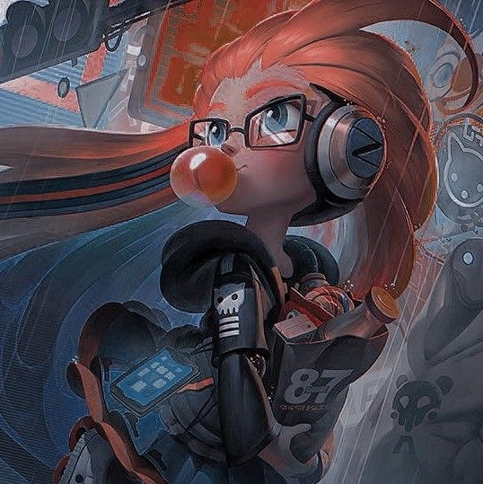

zedpowerfull
midlaner assassino
Absolutamente impiedoso e implacável, Zed é o líder da Ordem das Sombras; uma organização criada com a intenção de militarizar as tradições marciais e mágicas de Ionia para expulsar os invasores noxianos. Durante a guerra, o desespero o levou a libertar a forma secreta das sombras, uma magia espiritual malévola tão perigosa e manipuladora quanto poderosa. Zed dominou todas essas técnicas proibidas para destruir qualquer coisa que considerasse uma ameaça a sua nação, ou a sua nova ordem.
yone lutador do vento
midlaner lutador
Em vida, Yone seguia um rigoroso código de dever e honra. Ainda criança, motivado pela morte de seu pai, seu amor pela família o levou a assumir o papel de protetor. Sempre paciente e disciplinado, Yone era o oposto de seu meio-irmão Yasuo, que era impetuoso e imprudente. Mesmo assim, os dois eram inseparáveis, e quando Yone começou seus estudos em uma renomada escola de espadachins perto de sua aldeia, Yasuo veio atrás. Durante o treinamento, muitas vezes Yone era forçado a controlar a impulsividade de seu irmão mais novo. No entanto, quando Yasuo recusou a tutela pessoal do Ancião Souma, mestre da lendária técnica do vento, Yone lhe deu uma semente de bordo — um símbolo de humildade — em sinal de apoio e incentivo. Yone estava orgulhoso do irmão, mas tinha dúvidas sobre a decisão do sábio mestre e temia que a natureza impulsiva de Yasuo o prejudicasse como aluno. Mas o Ancião Souma era muito respeitado, e nunca tomava decisões impensadas. Colocando as preocupações de lado, Yone continuou seus treinos com lâminas duplas e sua destreza rapidamente conquistou a admiração e o respeito de seus colegas. Embora a habilidade de Yone fosse incomparável, a forma como Yasuo usava a técnica do vento tornava os treinos dos dois um espetáculo à parte e uma alegria para os próprios irmãos. Mas essa alegria não durou muito. A guerra chegou a Ionia. Yone, com vários outros discípulos, saiu para combater as forças noxianas que se aproximavam, enquanto Yasuo, relutantemente, ficou para proteger seu mestre. No entanto, certa noite, o Ancião Souma foi encontrado morto; morto pela própria técnica do vento que ele ensinava. Quando Yone voltou, descobriu que Yasuo tinha fugido. Isso abalou Yone profundamente. Seus medos tinham se concretizado. O Ancião Souma estava errado. Yone se sentiu culpado. Se Yasuo tivesse mesmo matado Souma, então Yone não tinha sido capaz de ensinar-lhe o caminho da justiça. Se Yasuo tivesse simplesmente abandonado seu posto permitindo a morte de seu mestre, então Yone não tinha sido capaz de ensinar-lhe sobre disciplina. De uma forma ou de outra, Yasuo já tinha matado vários dos que tinham ido atrás dele. E, para Yone, aquelas mortes também eram responsabilidade dele. Então, encontrou Yasuo. Quando as duas espadas finalmente se cruzaram, a lâmina de Yone era superior, mas a técnica do vento de Yasuo abateu seu irmão. No entanto, a morte não era o fim. Quando Yone acordou no reino espiritual, o peso do seu fracasso o esmagava. Ele explodiu em fúria e esmurrou o chão com raiva. Uma risada retumbante invadiu seus pensamentos. Ele se virou e viu um espírito monstruoso segurando uma lâmina cor de sangue. Era um poderoso azakana, uma entidade predatória que há muito tempo perseguia Yone por trás do véu. Antes que Yone pudesse falar, ele atacou. Yone sacou os ecos espirituais de suas lâminas bem a tempo de bloquear o ataque. Mais uma vez, se viu em um duelo em que suas habilidades eram superiores, mas a magia o oprimia. Ele foi consumido pela raiva. Uma vida inteira de honra e deveres se quebrou. Em um momento de fúria, Yone tomou a lâmina do azakana e perfurou a criatura. A última coisa que ouviu antes que uma nova escuridão o levasse foi a mesma risada retumbante… Quando voltou a si, Yone se viu novamente no reino material, mas agora ele era apenas uma mera sombra do que tinha sido. Ele se levantou com dificuldade, com o reino espiritual embaçado na mente e uma espada cheia de sangue na mão. Sobre seu rosto, havia uma máscara com a feição do azakana; ele não conseguia removê-la, mas agora podia ver outros azakana através dela. Eles ainda não eram demônios de verdade; só queriam se alimentar de negatividade antes de devorarem seus hospedeiros. Mas, como Yone viria a descobrir, se o nome de quaisquer azakana fosse revelado, eles seriam reduzidos a máscaras inertes de emoção personificada. Mesmo assim, ele não sabia dizer se, e nem quando, o azakana que ele usava despertaria para consumi-lo. Em vida, Yone havia usado a máscara de protetor, irmão e discípulo por tanto tempo que aquela tinha se tornado sua identidade. Mas, hoje, em momentos de calmaria, ele jura sentir a máscara se mexendo em seu rosto; seu passado e os conflitos mal resolvidos com Yasuo agora diminuem diante dessa nova ameaça. Na tentativa de entender o que ele se tornou, Yone caça essas criaturas traiçoeiras e, a cada nome descoberto, ele chega mais perto da risada que ainda o assombra. Nada mais importa. Agora só existe a busca pela verdade.
kassadim assassino do vazio
midlaner lutador
Abrindo um rastro ardente por um dos lugares mais sombrios do mundo, Kassadin sabe que seus dias estão contados. Guia e explorador experiente de Shurima, ele escolhera criar sua família nas pacatas tribos do sul; até o dia em que sua aldeia foi consumida pelo Vazio. Ele jurou vingança, combinando vários artefatos arcanos e tecnologias proibidas para os momentos difíceis que estavam por vir. Finalmente, Kassadin partiu para as terras abandonadas de Icathia, pronto para enfrentar qualquer criatura monstruosa do Vazio em sua busca pelo tal profeta, Malzahar.
zoe zoeira
midlaner poke
ZOE O ASPECTO DO CREPÚSCULO Como convém à natureza de seu Aspecto targonense, Zoe não chamou a atenção do reino celestial de maneira tradicional. Ela não derrotou forças ameaçadoras, nem se sacrificou por um ideal nobre, nem superou o desafio existencial de escalar o Monte Targon. Na verdade, Zoe era uma garota comum que, aparentemente, foi escolhida ao acaso entre os Rakkor. Seus professores diziam que Zoe era uma criança cheia de imaginação, mas muito teimosa, preguiçosa, distraída e travessa. Certo dia, ela resolveu matar uma aula dos textos sagrados para tentar fazer algo "menos chato" e foi notada pelo Aspecto do Crepúsculo. Ele ficou observando a garota zombar dos gritos zangados dos sacerdotes que a procuravam pela aldeia. Finalmente, após uma hora de buscas, ela se viu sem saída diante da beira de um penhasco. Antes que os professores pusessem as mãos em Zoe, o Aspecto invocou seis objetos e os colocou na frente dela: uma sacola de moedas de ouro, uma espada, um livro com tarefas feitas, um tapete de devoção, uma corda de seda e uma bola de brinquedo. Cinco dos objetos lhe permitiriam fugir ou se livrar daquela situação. Zoe escolheu a sexta opção. Sem se preocupar nem com a fuga nem com o perdão, ela agarrou a bola, chutou-a na parede de uma casa vizinha e cantou alegremente enquanto a bola quicava e ia parar entre os sacerdotes de caras amarradas. O Aspecto não via tanta alegria e irreverência diante do perigo desde seu último hospedeiro, que anunciara o fim da Grande Guerra dos Darkin. Encantado pela espontaneidade de Zoe, ele abriu um portal cintilante para o cume do Monte Targon, oferecendo à garota a chance de conhecer o universo. Ela mergulhou no portal e se fundiu imediatamente ao Aspecto. Depois, mostrou a língua para os professores e desapareceu. Essa transcendência foi única; na verdade, era inédita em todos os mitos e lendas do Targon. Porém, Zoe não se deu ao trabalho de tentar descobrir por que as regras que governam os Aspectos tinham sido mudadas só por causa dela. Na verdade, não se dava ao trabalho de entender regra nenhuma. E assim, ela viajou para dimensões da realidade nas fronteiras da compreensão mortal, brincando com poderes conhecidos por poucos. Embora Zoe sentisse que apenas um ano tinha se passado, quando voltou para casa, vários séculos já haviam transcorrido em Runeterra. Cheia de curiosidade adolescente, ela queria saber o que tinha perdido enquanto estivera ausente. Para sua sorte, podia viajar pela linha do tempo com um simples pensamento. Entre os eventos testemunhados por ela estavam a ascensão e a queda do "malvadão blindado", Mordekaiser; a destruição das Ilhas das Bênçãos na "Festa dos Fantasmas Assustadores"; as catástrofes da "Guerra pelas Rochas Brilhantes"; e a fundação de uma nova e rígida nação perto da "Floresta Sem Graça". Uma coisa em especial ficou clara para Zoe: ela não estava sozinha. Outros Aspectos também habitavam o mundo dos mortais; na verdade, vários deles. Portanto, mais amigos para ela conhecer! Mas eles sempre a ignoravam, parecendo bastante preocupados com seus afazeres nos espaços entre reinos. Intrigada, Zoe viajou para as estrelas, onde encontrou um grande dragão cósmico chamado Aurelion Sol. Embora ele claramente a desprezasse, assim como desprezava toda a sua espécie, Zoe sempre voltava para o lado do dragão, na esperança de descobrir o que o afligia. Pelos discursos bombásticos de autoexaltação que ele fazia, ela descobriu que os outros Aspectos o haviam humilhado, coroando-o com um artefato amaldiçoado para sugar seu poder. Zoe sentiu pena daquele pobre "cachorrinho espacial" e prometeu fazer o que pudesse para protegê-lo. Por sua vez, Aurelion Sol pelo menos parou de ameaçar destruí-la quando finalmente conseguir se vingar. Quanto ao relacionamento entre Zoe e o Forjador de Estrelas, ninguém sabe ao certo se ele é motivado por mero capricho, possessividade ou vontade de bagunçar o cosmos. Para os estudiosos e místicos do Monte Targon, o surgimento de um Aspecto geralmente é uma ocasião alegre... mas a imprevisibilidade de Zoe deixa todos com o pé atrás, pois nem ela mesma sabe o que sua presença pode prenunciar... A única certeza é que Runeterra está prestes a sofrer profundas transformações que podem resultar em caos, destruição e sangue.
le blanc
midlaner mago assassino

LEBLANC A FARSANTE A identidade de LeBlanc, a matrona da Rosa Negra, é tão intangível quanto os sussurros que a descrevem, tão efêmera quanto as ilusões que lhe dão forma. Talvez nem mesmo ela a conheça, depois de tantos séculos de imitações e artimanhas... Restos de uma ordem cuja existência em muito ultrapassa a de Noxus, iniciados na Rosa Negra têm conspirado nas sombras por séculos, atraindo os ricos e poderosos para seu meio. Apesar de eles, em geral, não saberem das origens de sua matrona, muitos descobriram lendas que contam sobre uma pálida feiticeira que auxiliou as tribos bárbaras divididas na sua luta contra o infame Revenã de Ferro que subjugou as terras que já estavam destruídas pelos darkin. Mesmo hoje seu nome é dito entre sussurros de medo: Mordekaiser. A feiticeira, cujas habilidades únicas a distinguiam no círculo íntimo do revenã antes de traí-lo, prometeu neutralizar a fonte do seu poder, o Bastião Imortal, separando-o do poço da morte que alimentava seu império tenebroso. No entanto, os bárbaros, que construíam seu império na sombra do bastião, não notaram que os segredos arcanos que ele guardava não haviam sido trancafiados completamente. A feiticeira pálida sempre fora agraciada pelo dom da ilusão e seu maior truque foi fazer com que Noxus esquecesse do poder sombrio que permeava seu próprio coração, antes que ela fosse queimada das páginas da história na época das Guerras Rúnicas. A Rosa Negra agora existe para levar adiante os interesses daqueles que podem utilizar essa magia, com sua base composta de nobres banais, atraídos pelos boatos de milagres, mantidos prisioneiros por feitiços e explorados impiedosamente. Mesmo o mais poderoso dos comandantes militares teve que servir aos verdadeiros mestres do culto, pois eles disputam entre si por influência em um jogo de intrigas e conquistas, tanto na capital noxiana quanto além de suas fronteiras. Por séculos, LeBlanc serviu em segredo como uma conselheira para dignitários estrangeiros, aparecendo em muitas nações ao mesmo tempo, com suas ilusões transformando a ordem em caos. Boatos de uma nova matrona que surgia com cada geração só levantaram mais questões; qual seria a “verdadeira” versão dela? Quando ela fala, é com sua própria voz? E qual seria o preço dos favores que ela oferece? Boram Darkwill não foi o último a descobrir a resposta dessa última pergunta. Apesar de a Rosa Negra ter ajudado sua busca pelo trono, ele recusou o conselho dos seus conselheiros escolhidos a dedo, forçando LeBlanc a tomar medidas drásticas. Depois de manipular o jovem nobre chamado Jericho Swain para revelar o envolvimento do culto, LeBlanc permitiu que a executassem junto de seus conspiradores mais proeminentes... ou foi o que ela fez parecer. No momento mais oportuno, ela se apresentou a Darkwill, encontrando um governante cada vez mais paranoico, temeroso de sua própria mortalidade. Depois de prometer lhe revelar os segredos que estenderiam sua vida, LeBlanc envenenou a mente de Darkwill lentamente, ao mesmo tempo que o fortalecia. Sob seu governo, a reverência à força de Noxus se tornou ainda mais sinistra e, juntos, eles garantiram que a lenda de Swain terminaria em desgraça nos campos de batalha de Ionia. Mas Swain, encorajado pelo conhecimento proibido vindo do Bastião Imortal, fez algo totalmente inesperado, conseguindo expulsar Darkwill do trono e conquistar Noxus para si mesmo. Esse novo Grande General não estava interessado no seu próprio legado, mas na glória de todo o império, e um homem assim não poderia ser facilmente corrompido. Depois de incontáveis séculos, LeBlanc se perguntou se ela finalmente encontrara um inimigo a sua altura. Suas ações colocaram Runeterra na beira de uma guerra generalizada muitas vezes. No rescaldo das campanhas desesperadas por Freljord, nos picos de Targon e nas profundezas dos desertos de Shurima, a mais sombria das magias começou a se espalhar novamente, aproximando-se cada vez mais de Noxus. Seja LeBlanc a mesma feiticeira pálida que traiu o Revenã de Ferro ou somente um de seus incontáveis reflexos, sua influência claramente vem de raízes antigas. A Rosa Negra ainda há de florescer de verdade.